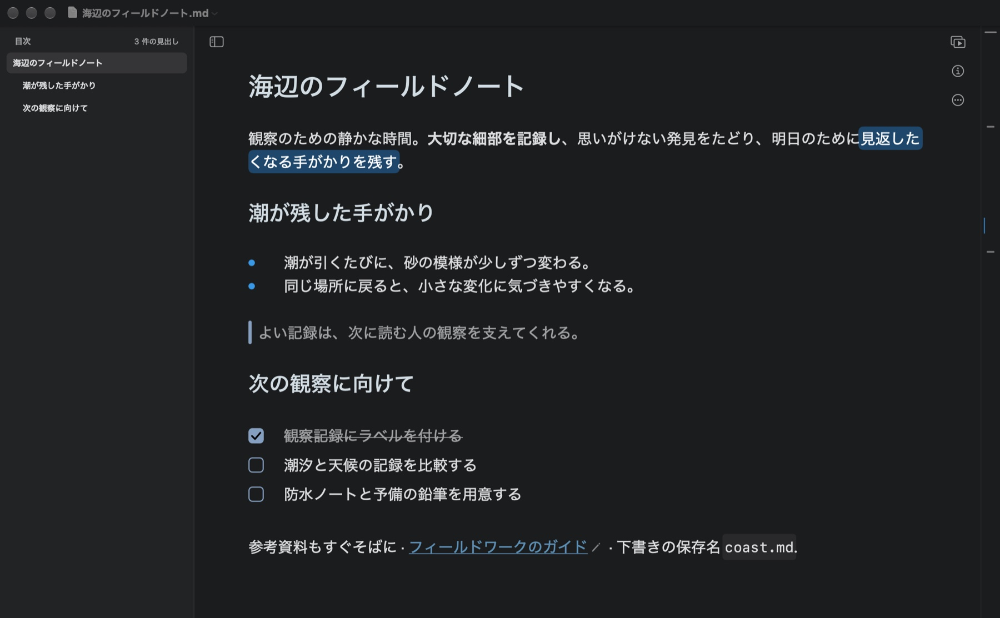
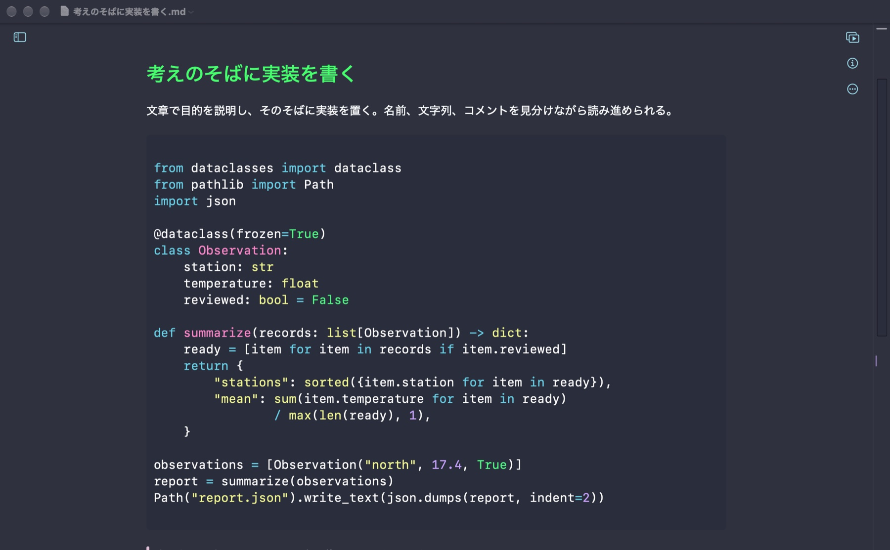
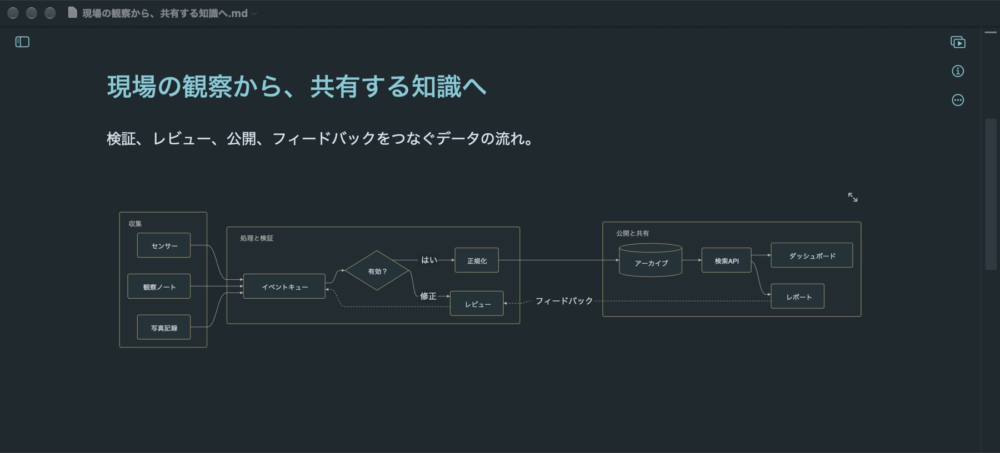
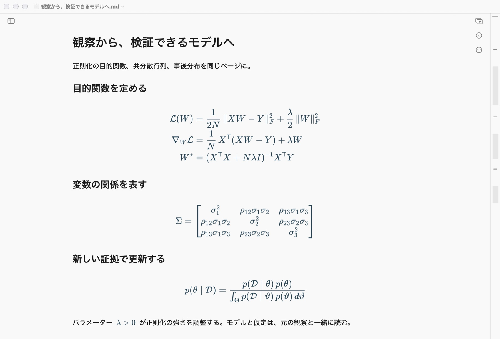
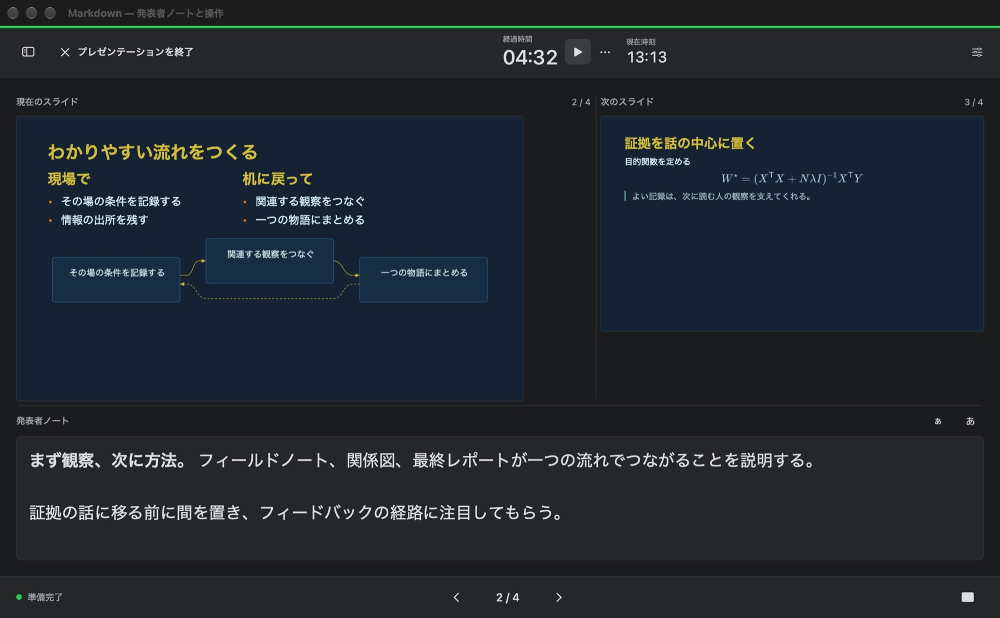

今いる場所がわかる
目次から見出しへ移動し、ミニマップで長い文書を見渡せます。検索と置換でまとめて編集。
Macで、アイデアに自然な居場所を。
文章で考えを広げ、図でつながりを示し、数式で導き出す。伝えるときは、そのままプレゼンテーションへ。
macOS 14以降 · Mac App Storeでの公開を準備中

考えの全体を、ひとつのページに
最初のアウトラインから技術提案まで、文章とその根拠をひとつに。見出し、表、チェックリスト、コードが入力とともに整います。
コードは言語ごとにハイライト。説明を実装のすぐそばに置いて、技術仕様も調査記録もチュートリアルも読みやすく。

Mermaidでグループ、分岐、フィードバックループを記述。原稿を書き換えれば、図も合わせて更新されます。

インライン数式は文章になじみ、複数行の数式は一歩ずつ展開。行列、積分、導出もきれいに表示。

目次から見出しへ移動し、ミニマップで長い文書を見渡せます。検索と置換でまとめて編集。
普通のMarkdownファイルを開き、好きなフォルダに保存。基本の編集にアカウント登録は不要です。
文書をPDF、HTML、Markdown、プレーンテキストに書き出し。Proなら、さらに多くの形式に対応します。
書いた内容を、そのまま伝える
区切りを入れてスライドを作り、本文の横でプレビュー。準備ができたら全画面で発表できます。Proの発表者ビューでは、メモ、次のスライド、タイマーを手元に表示。

基本は無料。必要に合わせてProへ。
基本機能は無料
買い切り · ファミリー共有に対応
アプリ内で購入できます。確定する前に、App Storeが地域の価格を表示します。月額・年額の定期購読ではありません。
困ったときはこちらへ
文書、書き出し、購入については、開発者にメールでご連絡ください。macOSとアプリのバージョン、問題が起きる手順をお知らせください。添付するのは、共有してもよいサンプルファイルだけで構いません。
entropysniper@gmail.com
Mac上の.mdファイルを開くか、アプリで新しい文書を作成し、好きなフォルダに保存します。フォルダや添付ファイルを開けない場合は保存先を確認し、macOSから求められた際にアクセスを許可してください。大切なファイルはバックアップを取ってください。
購入時と同じApple AccountでMac App Storeにサインインします。Markdownの「設定 → Pro」で「購入を復元」を選択してください。インターネットに接続し、Appleのサインイン画面が表示されたら手続きを完了します。復元できない場合は、エラーメッセージを添えてサポートにご連絡ください。
Markdown Proは一度の支払いで利用できる非消耗型のアプリ内課金で、ファミリー共有に対応しています。対象となる家族はAppleのファミリー共有設定を通じて利用できます。価格と購入条件は支払い前にApp Storeに表示されます。
ローカルの編集と保存済みのコンテンツはオフラインで使えます。リモート画像、リンクのプレビュー、購入と購入の復元には通信が必要になることがあります。別のクラウドサービス上のファイルは、そのサービスの利用状況に依存します。
文書をPDFに書き出す機能は無料です。スライドをPDFやPowerPointに書き出すにはProが必要です。ProではWord、RTF、ePub、画像、TextBundleにも書き出せます。
App Storeの支払いはAppleが処理します。不明な請求や返金については、Appleの「問題を報告」サービスをご利用ください。開発者はカード情報やApple Accountのパスワードを閲覧できません。
あなたの文書は、あなたの手元に
更新日 2026年11月7日
このポリシーはMarkdownのmacOSアプリと本製品サイトに適用されます。プライバシーとサポートに関するお問い合わせは、開発者のentropysniper@gmail.comまでお送りください。
MarkdownはMac上で選択したファイルを開き、保存します。開発者が文書、ファイル名、執筆履歴、編集設定を受け取ることはありません。アプリにはアカウント登録、広告サービス、分析SDKはありません。別の同期サービスのフォルダに保存する場合、そのサービスの設定とポリシーが適用されます。
リモート画像やリンクのプレビューを含む文書は、参照先のサイトに直接接続する場合があります。そのサイトはIPアドレスなどのネットワーク情報を含むリクエストを受信し、独自のプライバシーポリシーに基づいて処理します。ウェブリンクを開く場合も外部サービスにアクセスします。
購入と復元はApp Storeを通じてAppleが処理します。Markdownはデバイス上のStoreKitでProの利用権を確認し、その維持に必要な購入情報をローカルに保存します。開発者がカード情報やApple Accountのパスワードを受け取ることはありません。
メールでお問い合わせいただくと、開発者はメールアドレス、本文、お客様が添付したファイルを受け取り、回答のために利用します。送信済みの情報について相談したい場合も、同じアドレスにご連絡ください。
本サイトは広告、分析スクリプト、追跡Cookieを使用せず、GitHub Pagesでホスティングされています。GitHubは安全確保のため訪問者のIPアドレスを記録し、ホスティングに関する情報を独自のプライバシー声明に基づいて取り扱います。
GitHubプライバシー声明 ↗開く文書や、保存・コピー・削除する場所はお客様が選べます。アプリを削除しても、別の場所に保存したファイルは削除されません。本ポリシーを変更する場合は、このページに掲載し、更新日を変更します。